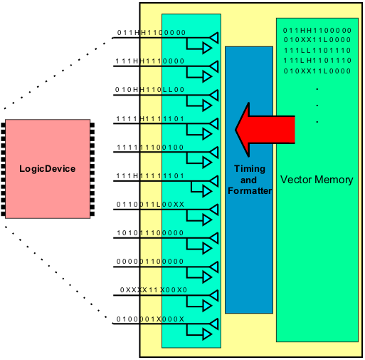

Vector-based pattern test system architecture
Test systems that support vector-based patterns use vector memory. The vector memory contains the pin driver/comparator information for each cycle of the pattern to be executed. This type of pattern is required to test logic devices. The pattern is translated from the device's simulation to the pattern that is stored in a test system's vector memory. Test systems with this architecture typically require large pin counts and large amounts of vector memory. The figure below shows a generic diagram of vector-based architecture.
